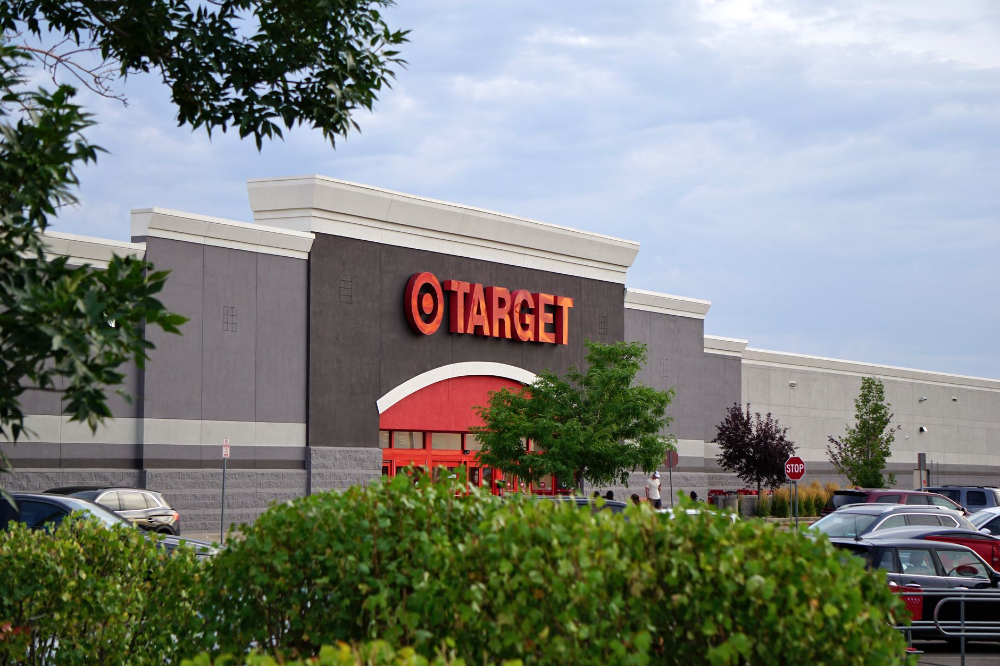

Set your Facebook ad radius to 1 to 5 miles around your business address, target people by zip code and interest, and run mobile-first video creative with a phone number and call button. That combination beats every "boost post" shortcut and puts your ad in front of people who can actually walk through your door or pick up the phone.

Facebook lets you draw a circle as tight as 1 mile or as wide as 50 miles around a pin, address, or postal code (Source: Meta Business Help Centre). Most small businesses waste money because they skip this step and let Facebook show ads to anyone within an hour's drive. You do not want browsers from three towns over. You want the roofer's neighbor whose gutter is falling off.
Below is the exact playbook I use with local clients: pest control, dentists, med spas, HVAC, coffee shops. It works because it treats Facebook like a local billboard with a phone number, not a branding exercise.

Set A Radius That Matches How Far Customers Actually Drive
Pick your radius based on your service area, not your ambition. A pizza shop that delivers within 4 miles should never run ads to a 25-mile ring. A plumber who charges a trip fee past 15 miles should cap the ad at 15 miles.
Open Meta Ads Manager, create a new campaign, and at the ad set level find the Locations box. Drop a pin on your storefront or type your address. Move the radius slider to your real service area. If you serve one zip code, type the zip code instead of using a radius. Facebook will only show your ad to people whose recent location matches.
One extra setting matters. Under the location dropdown, change "People living in or recently in this location" to "People living in this location." Tourists and delivery drivers passing through are not your customers. Locals are.
A tight radius also lowers your cost. Fewer people in the audience means Facebook does not have to bid against national advertisers for attention. I have seen cost per lead drop by half just by shrinking a 20-mile radius to 5 miles.
Build The Audience Around Zip Codes And Life Events
Radius is step one. Now layer in who those people are.
Under Detailed Targeting, add interests and behaviors that match your service. A wedding photographer adds "engaged (6 months)" and "recently engaged." A roofer adds "new homeowners" and interests in home improvement stores. A dentist adds parents of young children within the zip code.
Age matters more than most owners think. If you sell cosmetic dentistry, do not run ads to 18 to 24 year olds. Set your age band to 30 to 60. If you sell youth sports lessons, target parents aged 28 to 45, not the kids themselves.
Exclude your existing customers. Upload your customer email list as a Custom Audience, then exclude it from cold prospecting campaigns. You do not want to pay to show ads to people who already booked last month.
Save this audience with a clear name like "Springfield 5mi Homeowners 30-60" so you can reuse it. Naming saves you from rebuilding the same audience five times.
Write Ad Copy That Names The Town And The Problem
Generic ads lose. Local ads win because they mention the place.
Your headline should include your town or neighborhood. "Springfield Roof Leaks Fixed Same Day" beats "Quality Roofing Services." The first line of your primary text should name the problem and the location again. "Live in Springfield or Chatham? We fix leaks the same day we quote them."
Keep the body under 90 words. On mobile, Facebook cuts off text after about 125 characters before the "See more" link. The important stuff has to come first.
End with a specific offer and a phone number. "Call 555-0142 for a free 15-minute inspection this week" gets more calls than "Contact us today for a consultation." Numbers, timing, and dollar amounts all lift response.
96% of Facebook users access the platform on mobile, which makes mobile-first creative essential (Source: Marketing LTB). That means your image or video has to work on a 6-inch screen with no sound. Add captions to every video. Put text on your image in a font big enough to read one-handed on a phone.
Use Video Because Photos Alone Get Ignored
A 15-second vertical video of you standing in front of your shop or truck outperforms a still photo almost every time. It does not need to be polished. It needs to be real.
Shoot in 9:16 vertical. Film yourself saying three things: who you are, where you are, and what you offer this week. Something like: "Hi, I am Mike at Springfield Pest Control on Main Street. This week we are doing free termite inspections for homeowners within 5 miles. Call the number on the screen." Done. Fifteen seconds.
Add burned-in captions. Around 85% of Facebook video plays with the sound off, so your message has to land silently. Free tools like CapCut or Descript will auto-caption in a few minutes.
Run three video variations at once. Different opening lines, different offers, different shots. Facebook will spend more budget on the winner within 48 hours. Kill the losers, then make three new variations of the winner. This is how you compound results instead of guessing.
Set A Budget You Can Actually Sustain
The typical Facebook ad budget range for small businesses is roughly $500 to $2,000 per month (Source: Bir.ch Small Business Marketing). Pick a number inside that range and commit to 90 days before you judge results.
At the low end, start with $20 per day on one campaign. That is $600 per month. Do not spread it across five campaigns. Concentrate the spend so Facebook has enough data to optimize.
Set your campaign objective to Leads or Calls, not Traffic or Engagement. Traffic sends you clicks that never convert. Leads sends you form fills or phone calls. That is the whole point.
The average Facebook ad conversion rate across all industries in 2026 is around 9.21% (Source: TheeDigital). Use that number as a sanity check. If 100 people click your ad, expect roughly 9 to fill out your form or call. If you are getting 1 out of 100, your landing page or your offer is broken, not the ad.
Watch cost per lead, not cost per click. A $2 click that never becomes a customer is more expensive than a $5 click that books an appointment.
Retarget Everyone Who Already Showed Interest
Cold ads open the door. Retargeting closes it.
Install the Meta Pixel on your website. It takes about 10 minutes if you paste the code into your site header, or one click if you use Shopify, Wix, or Squarespace. The pixel tracks anyone who visits your site so you can show them ads later.
Build a retargeting audience of everyone who visited your site in the last 30 days but did not fill out your form. Run a second campaign to just those people with a stronger offer. Something like "Still thinking about a new roof? We are booking free estimates through Friday."
Retargeting ads can lift conversion rates for local campaigns because you are talking to people who already know you exist (Source: Marketing LTB). Cold ads warm them up. Retargeting ads bring them back.
Also build a retargeting audience of people who watched at least 50% of your video. Those viewers are more qualified than random clickers. Show them a version of your offer with a testimonial or a before-and-after photo.
Track Calls And Bookings, Not Likes
Vanity metrics kill small business ad accounts. Reach, impressions, and page likes do not pay your mortgage.
Set up call tracking. Meta has a Click-to-Call button you can add to any ad. Turn it on. Then use a tool like CallRail or a dedicated tracking number so you know which calls came from Facebook versus Google versus your yard sign.
Add form conversion tracking. If someone fills out a booking form on your site, the pixel should fire a "Lead" event. Inside Ads Manager, add the Cost Per Lead column so you see exactly what each booking costs.
Around 52% of marketers say Facebook delivers the highest ROI of any social platform (Source: SEO Design Chicago), but only if you measure the right thing. Track calls, booked appointments, and closed jobs. If a $600 monthly spend produces 12 booked jobs at $400 each, that is $4,800 in revenue from $600 in ads. That is the math that matters.
Review your numbers every Monday morning. Five minutes. Which ad has the lowest cost per lead? Move budget toward it. Which ad has spent $50 with zero leads? Kill it.
What To Do This Week
Pick one campaign. Set a 5-mile radius around your address. Write one ad that names your town and your offer. Shoot one 15-second vertical video on your phone. Set your budget at $20 per day. Turn on the Meta Pixel on your website. Run it for 14 days without touching it, then check your cost per lead and double down on what worked. Your competitors are still boosting posts and hoping. You will be running a real local ad system by the end of the month.